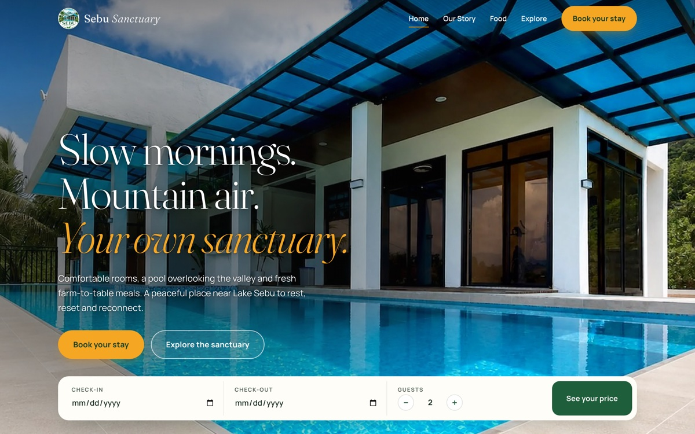
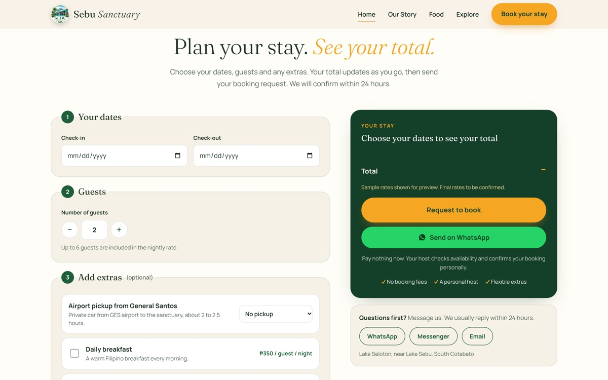
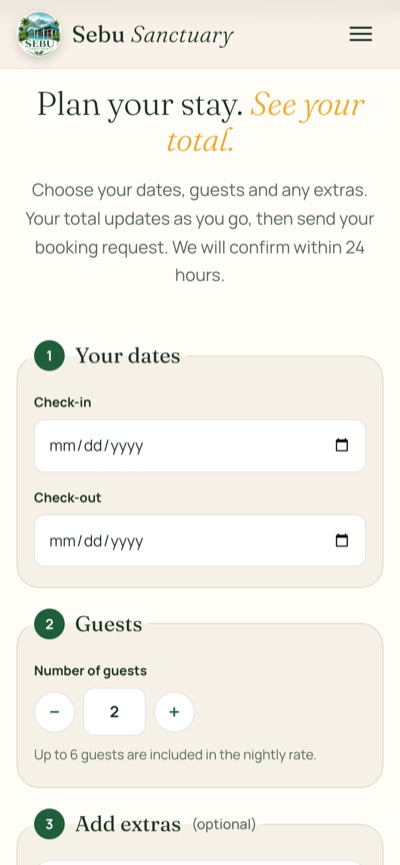

Sebu Sanctuary

Guests come for slow mornings and mountain air, so I designed a booking website that feels as calm as the place itself and makes planning a stay simple.
How I helped:
- Web design
- Elementor build
- Booking flow
- Content structure
- Responsive design
- Role
- Web designer & developer
- Industry
- Hospitality & tourism
- Market
- Philippines
- Platform
- WordPress + Elementor
- Website
- sebusanctuary.com ↗
The problem
A beautiful place that’s hard to picture
Sebu Sanctuary is a private house with a pool, high in the mountains of South Cotabato. Most guests have never been to Lake Sebu, and many are travelling from far away.
Before they book, they need to picture the house, know who will look after them, understand how to get up the mountain and see what a stay will cost. A page of photos and a phone number wasn’t going to answer all of that.
The goal
What it had to do
- Show the rooms, pool and food so guests can picture their stay.
- Make the trip from General Santos airport to the door feel easy.
- Let guests choose dates and extras, see a total and send a booking request.


How I worked
Follow the guest’s questions
I laid the page out in the order a guest wonders about things: what’s the place like, who will look after me, what will I eat, how do I get there, and what will it cost?
Each space has its own photo gallery, a “day at the sanctuary” timeline shows how a stay feels hour by hour, and the host introduces himself in his own words. Nearby waterfalls, lakes and Tboli culture get their own section, so guests can see there’s more to do than stay in.
The build
The decisions that mattered
- 01
A booking form that adds up as you go
Guests pick dates, the number of guests and extras like airport pickup, breakfast or a Seven Falls trip, and the total updates straight away.
- 02
Two easy ways to send it
“Request to book” or “Send on WhatsApp”. Nothing is paid up front, and the host confirms each booking personally.
- 03
The journey, step by step
A simple route from Manila or Cebu to General Santos, then up to Lake Sebu, with an airport pickup option right there.
The result
A stay you can picture before you arrive
Sebu Sanctuary is now live. Guests can explore every space, plan the trip up the mountain and send a booking request in one visit, on any device.